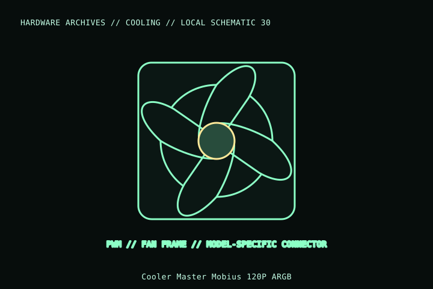

[ INDIVIDUAL COMPONENT // COOLING ]
Cooler Master Mobius 120P ARGB
Mobius 120P ARGB is a 120 × 25 mm fan with separate fan-power/control and 5 V ARGB wiring. Do not confuse it with non-ARGB Mobius 120 or lower-speed Mobius 120 OC.

MODEL IDENTIFICATION: Verify full model, suffix, SKU, generation, connector, and host-support documentation against the physical item. The record describes only the identified model and does not guarantee host compatibility.
Specifications
| Exact identity | Mobius 120P ARGB; Product Number MFZ-M2DN-24NP2-R1 |
|---|---|
| Frame | 120 × 120 × 25 mm |
| Speed / control | 0–2,400 rpm ±10%; 4-pin PWM |
| Lighting connector | 3-pin 5 V ARGB; electrically distinct from 4-pin 12 V RGB |
| Electrical data | 12 VDC fan; 0.18 A rated fan current per manufacturer listing. Check its separate lighting-power requirement in the manual. |
| Mount / fit | 120 mm standard mount; confirm 25 mm depth, PWM header current, and motherboard/controller 5 V ARGB support. |
Compatibility and installation
- Connect the fan’s 4-pin PWM lead and 3-pin 5 V ARGB lead to their separate, matching headers; never connect 5 V ARGB to a 12 V RGB header.
- Verify exact product number MFZ-M2DN-24NP2-R1 and frame depth, and respect header/controller current limits.
- Check mounting screw length and clearances before installing on a radiator or inside a case.
Service notes
Disconnect both fan and lighting leads before service. Hold blades still while cleaning and inspect both connectors for damaged pins, contamination, or strain.
Manufacturer references
- Cooler Master — Mobius 120P ARGBManufacturer page for exact Mobius ARGB model and technical specifications.
- Cooler Master — SupportManufacturer manuals and product support.
Model variants and revisions may change specifications or included hardware; the manufacturer’s exact product page/manual and the host manual take precedence.